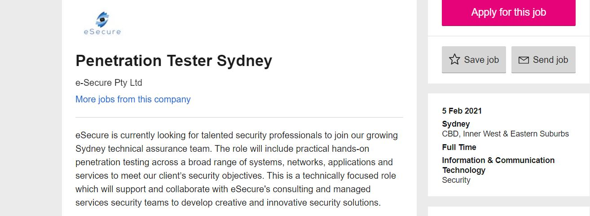

My name is Mark. I was born in Sydney and come from an Italian background, through which I can speak a bit of the language. I completed my first five years of schooling in Sydney before I moved to Griffith in regional NSW, which is where I stayed until completing my HSC in 2015. Before I started my current employed as a Health Information Officer at a private hospital in Melbourne, I worked at two separate petrol stations as a customer service attendant and while I've enjoyed all my work so far, it's not something I see myself doing for the rest of my life, which is why I've decided to pursue IT.
I have always had a strong interest in the IT field, which basically started when I was a little kid playing basic flash games on my parent’s computer. Over time, this basic interest became stronger and lead me to taking IT based electives in high school and eventually onto starting a Diploma of IT. Adding to that being from a fairly tech-savvy family definitely contributed to my interest. I would say my main interests in IT would definitely be network security and programming AI, especially for robots. I want to study with RMIT because I believe they can offer me one of the best looked upon qualifications in the professional world, which would in turn increase my job prospects as I look to build a career for myself in the world of cyber security and more specifically my ideal job as a penetration tester. I thought studying through Open Universities was also a really good option, as it allows me to be flexible with combing study and work. I expect to learn relevant topics and subjects that will aid me in finding work after my study. Personally, with the interests that I have I would love to go into further depth with programming and networking, as careers in these fields are what I aspire to achieve.
I would consider Penetration Testing as my ideal job and something I will be aiming to work towards over the course of my studies here at RMIT. From my knowledge, a penetration tester is responsible for testing network security and integrity through various means such as exploitation software similar to how an unethical hacker would attempt to gain access. It is with these findings that they write up reports detailing how access was gained (if it was) and suggestions on how to improve security. What makes it interesting to me is basically getting the license to hack and try and gain access, really testing one’s knowledge on how to think outside the box and because of this I believe that it is a job that to me would never get old and stale. Experience in network security would be required as the job is quite specialist, along with this knowledge of various security styles and techniques would also go a long way. Knowledge in with network penetration tools and experience in red teaming would be beneficial as it is a major part of the job. Participating in hacking challenges is also a bonus, along with a proficiency in programming and any IT industry certifications and awards (CREST and OSCP). At this stage, I understandably have none of these qualifications, certifications, or experience, though I do believe I possess the necessary lateral thinking required by the job. Over the duration of this course, my goal is to strengthen my knowledge in networking to the point that along with the completed degree I would provide outstanding knowledge to apply for a job in network security. Once in the professional world, with sufficient skill and experience, I would aim for the completion of hacking challenges and contests and any certifications that might be relevant and looked favorably upon. I believe these along with the years of experience I would have would put me in good stead to apply for this job.
 Check out the link for the job!These tests mean a fair bit to me, they are always a good indication of what your true personality is. In particular the Myers-Briggs test really goes into detail about how your personality affects your day-to-day life and personally really gave me an insight into personality traits in which while I did not know I had. Due to this, I believe everyone is best served by taking one of these tests and really like me discover things about themselves that they would not otherwise know. Being honest, I believe that these personality traits would serve me well in group work. The personality trait of Mediator, which was assigned to me, is an integral part of any group as naturally there will be conflict. As a mediator, I’d be able to form opinions on both sides of the conflict while effectively keeping everyone on track with their tasks, effectively providing any group with a good core.
In my proposed IT project, I intend to create and develop a smartphone video game. The game in question would be combining two of my biggest interests in sport and technology to create a sport management game focusing on rugby league. I will be leaning on two already well-established games for inspiration, one being the Football Manager series developed Sports Interactive and a smaller project called Pocket GM developed by Jonathan Howell. Taking from both sources I would love to create something functional, easy to use while remaining thoroughly in depth and with a lot of potential for game growth. My motivation for this project really stems from having limited competition and a personal desire to see another successful game based off a competition in which I am incredibly passionate about and one that does not really have massive worldwide representation. Expanding on the competition side of things, I understand the market only contains one game of similar ilk, that being Rugby League Team Manager 3 developed by Alternative Software Ltd, which unfortunately is only available on PC. Now this is where the main source of inspiration and motivation for my project comes in, I would love to see the world of rugby league management simulations be expanded to mobile devices and as we have seen with aforementioned games like Pocket GM and Football Manager Mobile, there is definitely scope for the game to exist and thrive on the market. The project would involve creating a game in which you take control of a rugby league coach/manager, who hopefully will be customizable or, at the very least being able to enter your own name. From then on, you would be able to choose the team you wanted to manage/coach. Initially due to time and skill constraints this would be limited to just National Rugby League sides which would be linked to a database containing false player names as to avoid any player likeness issues, implanting a roster/database editor would be on my list of things to add to allow players to be able to go more in depth with customization. The players in the database will be assigned rating out of 20 in various aspects of the game, including attributes like tackling, passing and sprint speed. These attributes will contribute to the overall rating of the team they are currently part of, which will be separated into three different categories: attack, defense and technical. As above, the game due to skill constraints, would only feature match simulations, eventually I would love to be able to add a basic 2D match engine, this would hopefully add more immersion to the game. Players would be able to make roster changes during the season, sign and release players, view player growth and their seasonal statistics while progressing through the seasons aiming to win the competition. I would also later down the line like to implement a youth system, in which young players could be signed to the first team. I would like to be able to add multiple save files so users of the app would be able to test out multiple teams. As development of the game goes on, additional leagues would be added such as the English Super League and the USA Rugby League LLC along with lower grades of domestic rugby league here in Australia such as the NSW and Queensland Cup and the Ron Massey Cup. The game will be developed using the programming language Swift in XCode and will at first only be available on iOS devices, though porting the game to Android will be on the cards if it is feasible. As mentioned above, the game will be developed utilizing Swift in XCode as from my knowledge it is the best language for developing apps for iOS devices, which is what the game will be. Now as I only own a Windows computer, I will be using a Virtual Machine to run macOS in which I will be able to run XCode and begin to build the app. I will be utilizing my custom-built personal computer to run this virtual machine, which I will most likely use VirtualBox, as I have had previous experience using it before. I will also be utilizing my personal iPhone X to test and debug the app. As for skill required, I would have to learn Swift effectively to be able to make this dream a reality, though that being said as I progress through my studies this year, I believe it will put me in good stead to be able to pick it up quite quickly. I intend to use my aforementioned custom-built computer to handle all code writing. Feasibility wise, I already own all the hardware required to develop the app. The same goes for the above-mentioned software too. Again, on the feasibility side of things, I see this as being a long term product and due to my passion for both sport and gaming, I believe this project would be something I never lose interest or motivation for. Despite the game being quite a niche product, I believe that if this product is successful, it would fill the need for a mobile Rugby League manager game, which I am sure other fans of the sport would be looking forward to. I would love to be able to publish the game on the App Store and make it available for everyone to download. Adding it to the Google Play Store would also increase its reach and potential.